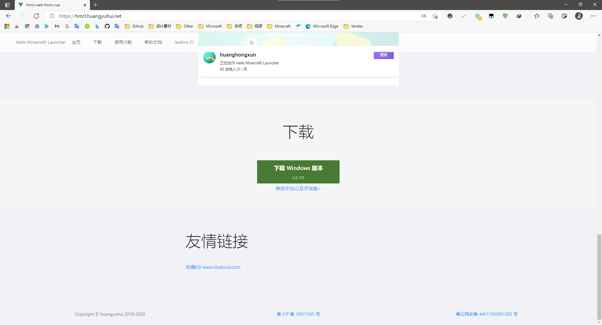

Welcome To My Github Page
How To Play Minecraft On HMCL
step.1
启动浏览器，输入网址：『hmcl.huangyuhui.net』，敲下『Enter』
step.2
找到并点击『下载 Windows 版本』

step.3
打开下载文件夹，找到『HMCL-3.3.XXX.exe』，右击『剪切』
step.4
打开『此电脑』，选择一个分区进入（比如 『本地磁盘C』 根据个人情况选择）
step.5
『新建文件夹』并进入，（文件夹名字自己设定）
step.6
把下载的HMCL『粘贴』进来
step.7
右击-『发送到』-『桌面快捷方式』
step.8
回到桌面，双击运行『HTML-XXX』
step.9
回到桌面，双击运行『HTML』，新建用户，选择『离线模式』，输入用户名
单击『版本列表（左侧）』-『安装新游戏版本（上侧）』
step.ooooooo
如果自己不会 ~科学上网~ ，下载游戏时建议『更换下载源』，否则速度会很慢
启动Minecraft就不用教了吧
现在感觉我在教一个傻子——搞得自己也像个傻子一样
© ZiMoFangCong 2021